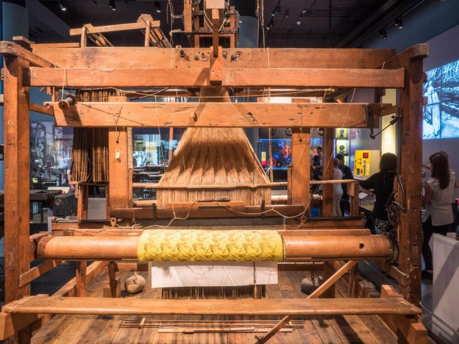
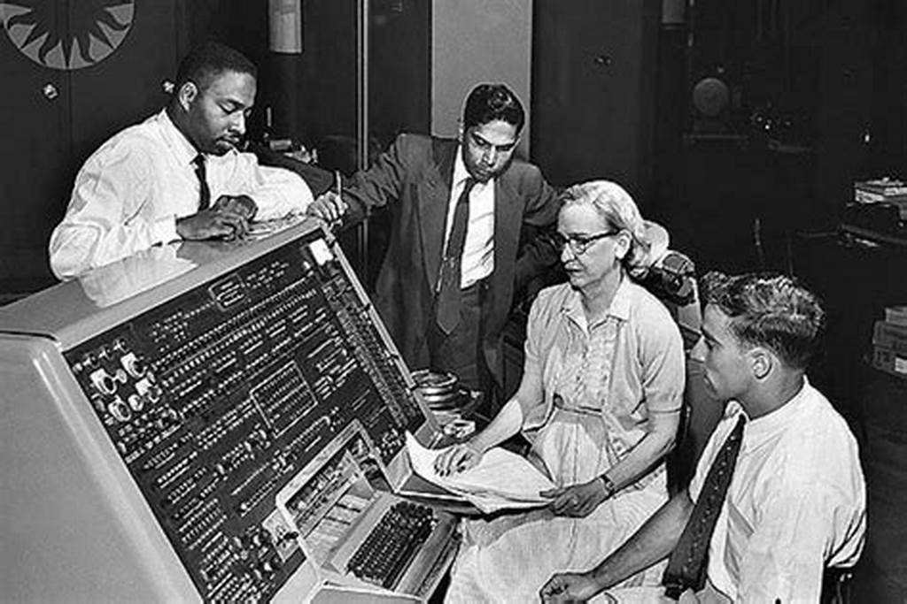

1 - El Telar de Jacquard (1801)
Uno de los primeros dispositivos programables fue el telar de Jacquard, inventado por Joseph Marie Jacquard en 1801. Este telar utilizaba tarjetas perforadas para controlar los patrones tejidos. Las tarjetas perforadas permitían la automatización de tareas repetitivas y son consideradas un precursor importante de los programas de computadora.
2 - Desarrollo de lenguajes (1950)
La creación de lenguajes de programación de alto nivel como Fortran (1957) y COBOL (1959) revolucionó la forma en que se desarrollaban los programas. Estos lenguajes hicieron la programación más accesible y eficiente, permitiendo a los programadores escribir código en una forma más comprensible y manejable.
3 - Revolución de Internet (1990)

La llegada de Internet transformó radicalmente la programación y la informática. Lenguajes como HTML, JavaScript y PHP permitieron la creación de sitios web dinámicos e interactivos, cambiando la forma en que la gente se comunicaba, trabajaba y accedía a la información. Internet convirtió la programación en una herramienta esencial para construir la infraestructura de la web y abrió nuevas posibilidades para la innovación y el desarrollo tecnológico.